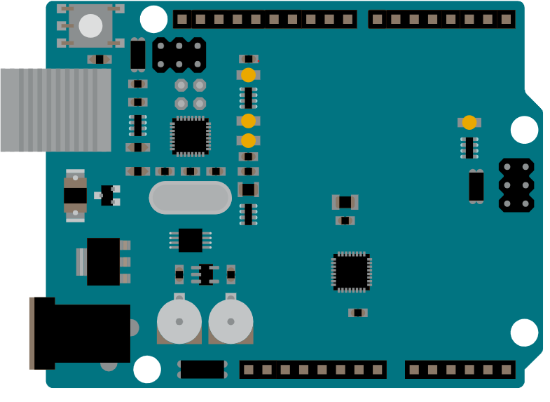
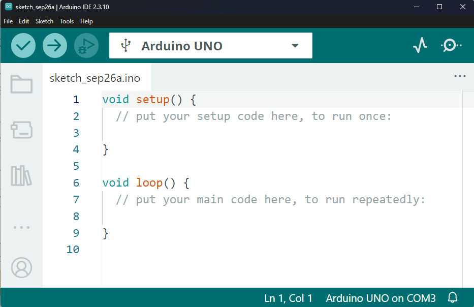
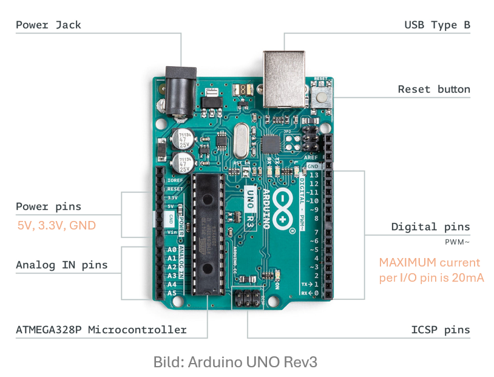
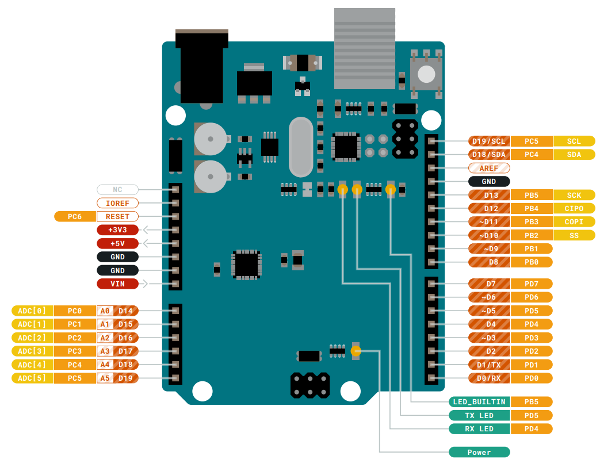
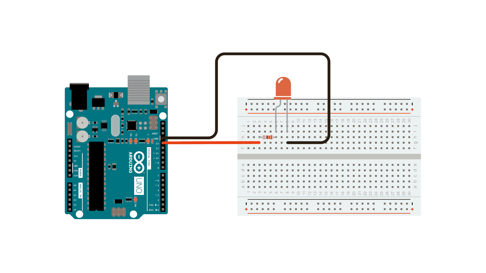

Was ist Arduino?
Der perfekte Einstieg in die Welt der Mikrocontroller, Elektronik und Programmierung.
Die Plattform
Arduino ist eine Open-Source-Elektronikplattform, die auf einfach zu bedienender Hard- und Software basiert. Arduino-Boards können Eingaben (Inputs) lesen – z. B. Licht auf einem Sensor oder einen Finger auf einem Knopf – und diese in Ausgaben (Outputs) umwandeln – z. B. einen Motor aktivieren oder eine LED einschalten.
Man sagt dem Board, was es tun soll, indem man Befehle an den Mikrocontroller sendet. Dazu nutzt man die Arduino-Programmiersprache und die Arduino Software (IDE).
Warum Arduino?
- Kostengünstig: Arduino-Boards sind im Vergleich zu anderen Plattformen sehr erschwinglich.
- Plattformübergreifend: Die Arduino Software läuft auf Windows, Mac OS und Linux.
- Einfache Programmierung: Leicht für Anfänger, aber flexibel genug für Fortgeschrittene.
- Open Source: Hard- und Software sind erweiterbar und die Community ist riesig.
Anatomie eines Arduino Boards
Eine Übersicht der wichtigsten Komponenten auf dem Board.

1. Mikrocontroller
Das Gehirn des Arduino. Hier werden Programme geladen und ausgeführt. Denk an ihn als einen winzigen Computer für spezielle Aufgaben.
2. USB Port & Chip
Verbindet das Board mit dem PC. Der USB-zu-Seriell-Chip übersetzt Daten, damit der PC den Mikrocontroller programmieren kann.
3. Digitale Pins
Pins, die digitale Logik (0 oder 1, LOW oder HIGH) verwenden. Häufig genutzt für Schalter oder um LEDs ein-/auszuschalten.
4. Analoge Pins
Diese Pins können analoge Werte lesen (z.B. von Temperatursensoren oder Drehwiderständen) mit einer Auflösung von 0-1023.
5. Power Pins (5V/3.3V)
Diese Pins werden verwendet, um externe Komponenten wie Sensoren oder kleine Motoren mit Strom zu versorgen.
6. GND (Ground)
Auch bekannt als Masse oder Minus-Pol. Wird benötigt, um einen Stromkreis zu schließen (Spannungslevel 0 Volt).
Grundlegende Arbeitsweise
Die meisten Arduino-Boards sind so konzipiert, dass ein einziges Programm auf dem Mikrocontroller läuft. Sobald das Board Strom hat, beginnt die Ausführung.
Jedes Programm hat eine Kernfunktion namens "loop" (Schleife). Innerhalb dieser Schleife kann das Programm rasend schnell immer wieder:
- Einen Sensor auslesen.
- Ein Licht einschalten.
- Prüfen, ob eine bestimmte Bedingung erfüllt ist (z.B. "Ist der Knopf gedrückt?").
Die Geschwindigkeit ist unglaublich hoch (oft im Mikrosekundenbereich), es sei denn, wir sagen dem Programm absichtlich, es soll warten.
Wissenstest: Basics
1. Welche Komponente wird als das "Gehirn" des Arduino bezeichnet, auf das Programme geladen werden?
2. Was ist ein typisches Beispiel für einen Aktor (Output)?
Arduino Software (IDE) & Sketches
Wie sagst du dem Board, was es tun soll? Lerne die Werkzeuge und die Sprache kennen.
Die Arduino IDE
Die Integrated Development Environment (Entwicklungsumgebung) ist das Programm auf deinem Computer, mit dem du den Code (genannt "Sketch") schreibst und per USB auf das Arduino-Board hochlädst.
Sprachreferenz
Die Arduino-Programmiersprache basiert auf C/C++. Hier findest du das Lexikon aller Befehle, Funktionen (wie digitalWrite()), Variablen und Strukturen.

Die Arduino IDE
Die Arduino IDE (Integrated Development Environment) ist die Software, mit der du Code schreibst und auf dein Board lädst. Sie besteht aus vier Hauptbereichen:
- Toolbar (Werkzeugleiste): Buttons für häufige Funktionen wie "Überprüfen" (Verify - prüft auf Fehler im Code) und "Hochladen" (Upload - lädt den Code aufs Board).
- Text-Editor: Der große Bereich, in dem du deinen Code (Sketch) schreibst. Dateiendung ist
.ino. - Konsolen-Output (unten): Zeigt Meldungen der IDE an, z.B. ob das Hochladen erfolgreich war oder welche Fehler im Code gefunden wurden.
- Einstellungen (unten rechts): Zeigt das aktuell ausgewählte Board und den Port an (z.B. Arduino Uno an COM3).
Wie lade ich Code hoch?
- Verbinde das Board per USB.
- Wähle unter Werkzeuge -> Board das richtige Board aus.
- Wähle unter Werkzeuge -> Port den Anschluss aus.
- Klicke auf den Pfeil nach rechts (Upload) oben links. Nicht das Kabel abziehen, während "Hochladen..." steht!
Tutorial: Was ist ein Sketch?
Ein Sketch ist der Name, den Arduino für ein Programm verwendet. Es ist die Code-Einheit, die auf das Board geladen und dort ausgeführt wird. Jeder Sketch besteht aus verschiedenen Bausteinen:
1. Kommentare (Comments)
Kommentare werden vom Arduino beim Ausführen ignoriert. Sie sind für Menschen gedacht, die den Code lesen, um zu erklären, was das Programm tut.
Mehrzeiliger Kommentar.
Alles hier dazwischen wird ignoriert.
*/
// Einzeiliger Kommentar. Erklärt z.B. eine Variable:
int ledPin = 13; // LED ist an Pin 13 angeschlossen
2. Variablen (Variables)
Eine Variable ist ein Speicherort für ein Stück Daten. Sie hat einen Namen, einen Typ und einen Wert. Der Vorteil: Anstatt im Code überall die Zahl "13" zu schreiben, schreibst du ledPin. Ändert sich der Pin, musst du ihn nur einmal am Anfang ändern.
int ledPin = 13;
3. Funktionen (Functions)
Eine Funktion ist ein benannter Code-Block, der etwas Bestimmtes tut. Du kannst Funktionen aufrufen, die bereits existieren.
pinMode(pin, mode): Konfiguriert einen Pin als Eingang (INPUT) oder Ausgang (OUTPUT).digitalWrite(pin, value): Gibt einen Wert aus (HIGH = 5V an, LOW = 0V aus).delay(ms): Pausiert das Programm für die angegebene Zeit in Millisekunden.
4. setup() und loop()
Zwei spezielle Funktionen müssen in jedem Sketch vorhanden sein:
Wissenstest: Software
1. Wie nennt man ein Programm, das in der Arduino IDE geschrieben wird?
2. Welche Funktion wird in einem Arduino-Programm genau EINMAL beim Start ausgeführt?
3. Wie markiert man einen einzeiligen Kommentar im Code?
Hardware: Der Arduino UNO R3
Lerne das populärste Board der Arduino-Familie kennen.
Ein- und Ausgänge des Arduino UNO
Digitale Pins (Pins 0-13)
- Nutzbar als Eingang (z. B. Taster) oder Ausgang (z. B. LED) – je nach Konfiguration
Eingang:
- Ein Low-Pegel wird bis 1,5V und ein High-Pegel ab 3V erkannt.
Ausgang:
- Können nur zwei Signalpegel einnehmen:
HIGH = 5V / LOW = 0V
6 analoge Eingänge (A0–A5)
- Messen Spannungen zwischen 0 und 5V
- Werte werden durch den ADC in Zahlen von 0 bis 1023 umgewandelt
- Typische Anwendung: Sensoren (Temperatur, Licht)
PWM-Ausgänge (Pins 3, 5, 6, 9, 10, 11)
- Ermöglichen eine „analoge“ Ansteuerung
- Anwendung: LED dimmen, Motoren steuern
UART (Pins 0 & 1)
- Serielle Kommunikation mit PC
I²C (Pins A4 = SDA, A5 = SCL)
- Verbindung mit Sensoren/Displays über zwei Leitungen
SPI (Pins 10–13)
- Schnelle Datenübertragung (z. B. SD-Karten)
USB-Port
- Programmierung & Stromversorgung
Stromanschluss (Power Jack)
- Externe Versorgung möglich (6-20V)
Powerpins 3,3V und 5V
- Spannungsversorgung für Bauteile
GND-Pins (Masseanschlüsse)

Board Layout & Pinout
Hier siehst du die genauen Bezeichnungen und Belegungen der einzelnen Komponenten auf dem Arduino UNO R3 im Detail.

Wissenstest: Hardware
1. Welcher Mikrocontroller-Chip bildet das Herzstück des Standard Arduino UNO R3?
2. Welche Pins können eine "analoge" Ansteuerung (z.B. Dimmen einer LED) simulieren?
3. Welche Spannung gibt ein digitaler Ausgang aus, wenn er auf den Pegel "HIGH" gesetzt wird?
Beispiel: Das Blink-Licht
Der absolute Klassiker. Lerne, wie du eine LED auf dem Board oder auf dem Steckbrett zum Blinken bringst.
Dieses Beispiel zeigt das Einfachste, was du mit einem Arduino machen kannst, um eine physische Ausgabe zu sehen: Es lässt die eingebaute LED blinken.
Was du brauchst
- Arduino Board (z.B. UNO)
- Optional: Externe LED
- Optional: 220 Ohm Widerstand
Die Schaltung
Die meisten Boards haben bereits eine eingebaute LED, die an einem digitalen Pin (beim UNO ist es Pin 13) angeschlossen ist. Du musst also theoretisch gar nichts anschließen.
Wenn du eine externe LED nutzen willst:
Verbinde ein Ende des Widerstands (220 Ohm zur Strombegrenzung) mit einem digitalen Pin (z.B. Pin 8). Verbinde das lange Bein der LED (Anode, Plus) mit dem anderen Ende des Widerstands. Das kurze Bein der LED (Kathode, Minus) verbindest du mit GND (Ground).

Der Code
Klicke auf die einzelnen Code-Zeilen, um herauszufinden, was sie bewirken.
/*
Blink
Schaltet eine externe LED für eine Sekunde ein, dann für
eine Sekunde aus, und so weiter.
*/
void setup() {
pinMode(8, OUTPUT);
}
void loop() {
digitalWrite(8, HIGH);
delay(1000);
digitalWrite(8, LOW);
delay(1000);
}Diese Funktion wird genau einmal aufgerufen, wenn das Board Strom bekommt oder resettet wird. Hier treffen wir Vorbereitungen.
Konfiguriert den digitalen Pin 8, an dem wir unsere LED angeschlossen haben, als Ausgang (
OUTPUT). So weiß der Arduino, dass er hier Strom aussenden soll.
Die geschweifte Klammer schließt den Block der setup()-Funktion ab.
Dies ist die Hauptschleife. Alles, was in diesen Klammern steht, wird vom Mikrocontroller endlos wiederholt.
Schaltet den Pin 8 ein, indem er auf HIGH gesetzt wird (liefert 5 Volt). Der Strom fließt, die LED leuchtet auf.
Pausiert das Programm für 1000 Millisekunden (also genau 1 Sekunde). Während dieser Zeit bleibt die LED an, weil der Zustand nicht geändert wird.
Schaltet den Pin 8 aus, indem er auf LOW gesetzt wird (0 Volt). Der Stromkreis ist unterbrochen, die LED geht aus.
Pausiert erneut für 1 Sekunde, damit wir sehen können, dass die LED ausgeschaltet ist, bevor die Schleife wieder von vorne beginnt.
Die geschweifte Klammer schließt den loop()-Block ab. Danach springt das Programm sofort wieder zur ersten Zeile in der loop().